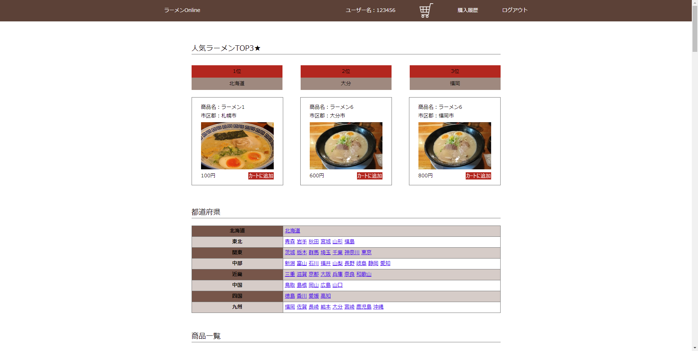
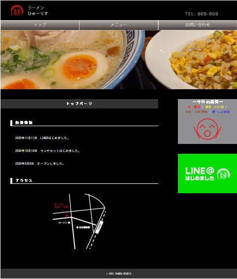

はじめまして。大分県宇佐市出身、平成4年生まれの歳、エンジニア志望の中尾 翔と申します。
大分大学を卒業後、新卒で佐伯市にある造船会社に入社しました。設計業務を担当し5年半務めましたが、会社や造船業界全体の先行きに不安を感じ転職を決意しました。
現在は職業訓練に通いながら、自宅ではオンラインスクールを活用してWebデザインやプログラミングについて勉強中です。
（2021年3月6日更新）
はじめまして。大分県宇佐市出身、平成4年生まれの歳、エンジニア志望の中尾 翔と申します。
大分大学を卒業後、新卒で佐伯市にある造船会社に入社しました。設計業務を担当し5年半務めましたが、会社や造船業界全体の先行きに不安を感じ転職を決意しました。
現在は職業訓練に通いながら、自宅ではオンラインスクールを活用してWebデザインやプログラミングについて勉強中です。
（2021年3月6日更新）
職業訓練とオンラインスクールを通してデザインやエンジニアのスキルを学習しました。
| < 保有資格 > 職業訓練の中で取得しました。 |
|---|
|
| < 職業訓練 > 期間：2020年12月～2021年3月(4ヵ月間) |
|---|
|
| < オンラインスクール > 期間：2020年11月～2021年2月(4ヵ月間) |
|---|
|
< サンプルECサイト >
サンプルECサイトのセキュリティ対策と各種機能追加。
HTML/CSS/Bootstrap/php/MySQL

※画像クリックでページへジャンプ
GitHubを使用して講師の方とチーム開発を行いました。用意されたECサイトに対して元のソースコードから逸脱しないように気を付けながら、XSS/CSRFなどのセキュリティ対策及び購入履歴画面やランキング機能の追加をしました。
< ラーメンonline >
オリジナルのご当地ラーメンお取り寄せサイトを作成。
HTML/CSS/php/MySQL
※画像クリックでページへジャンプ
オリジナルのECサイトを作成しました。コーディングだけでなく、企画・設計・ワイヤーフレームの作成などサイトが出来上がるまでの一通りの流れを1人で行いました。
< ラーメンヒューリス >
オリジナルのラーメン屋さんのHPを作成。
HTML/CSS/Javascript
※画像クリックでページへジャンプ
Illustratorでデザインカンプを作成しました。こだわりは各ページにJavascriptを使ってミニゲームのようなもの配置したところです。